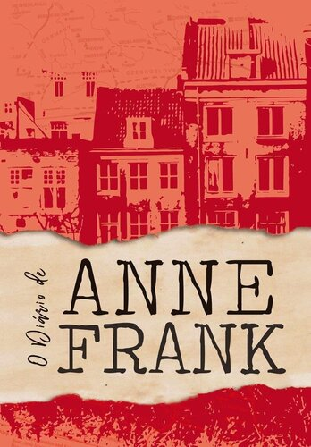
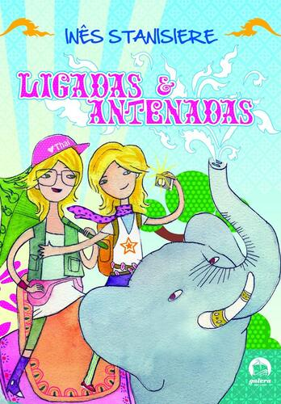

Quem Somos
Somos um grupo de amigas apaixonadas pela leitura, principalmente pela literatura. Atualmente estamos no 2° Ano do Ensino Médio de uma escola na Zona Sul de São Paulo.
Fizemos o site com o intuito de compartilhar nossas paixões e críticas sobre determinados livros, além de praticar para algumas propostas de redação de vestibulares.
Espero que curtam nosso site e compartilhem com seus amigos!
Dos livros à vida, Geh, Duda e Sarah